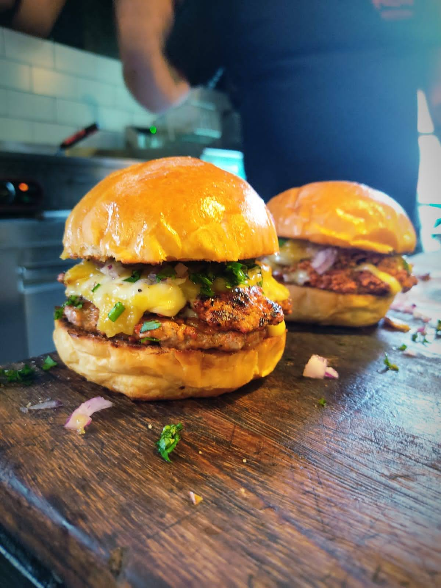

Pop-Ups & Asesorías
Diseñando experiencias gastronómicas temporales en Chile y México. El sabor no necesita una dirección fija.
Detalles del Proyecto
Diseñé y ejecuté experiencias gastronómicas pop-up innovadoras en Chile y Ciudad de México. Gestioné la logística, el desarrollo de menús y la operación de eventos temporales, adaptándome a diferentes mercados y audiencias.
Galería de Imágenes
